Введите запрос (часть названия группы/подтипа/контроллера/тега или имени файла параметров) и нажмите
«Найти» (или Enter). Поиск ищет по подстроке, а не только по целому слову.
2
Отметьте «Точное совпадение слова», если нужно исключить ложные совпадения — например запрос «ПЧ»
без этой галочки найдёт и «КПЧ», а с галочкой — только записи со словом «ПЧ» отдельно.
3
Переключателем «Прошивки» / «Параметры» выберите, что искать — режим переключается мгновенно и
повторно выполняет текущий запрос.
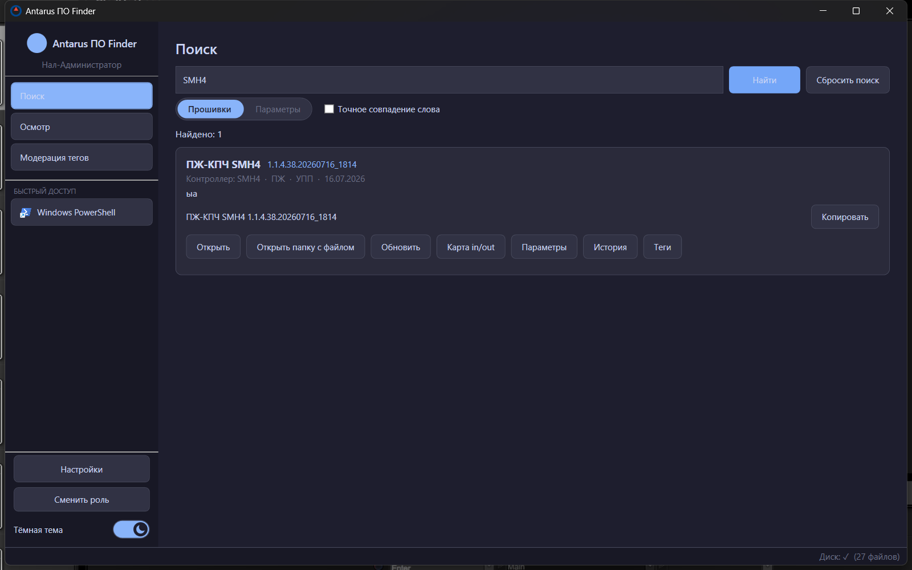
Рис. 2 — карточка найденной версии с кнопками действий (набор кнопок зависит от того, скачана
ли версия локально, и от роли).
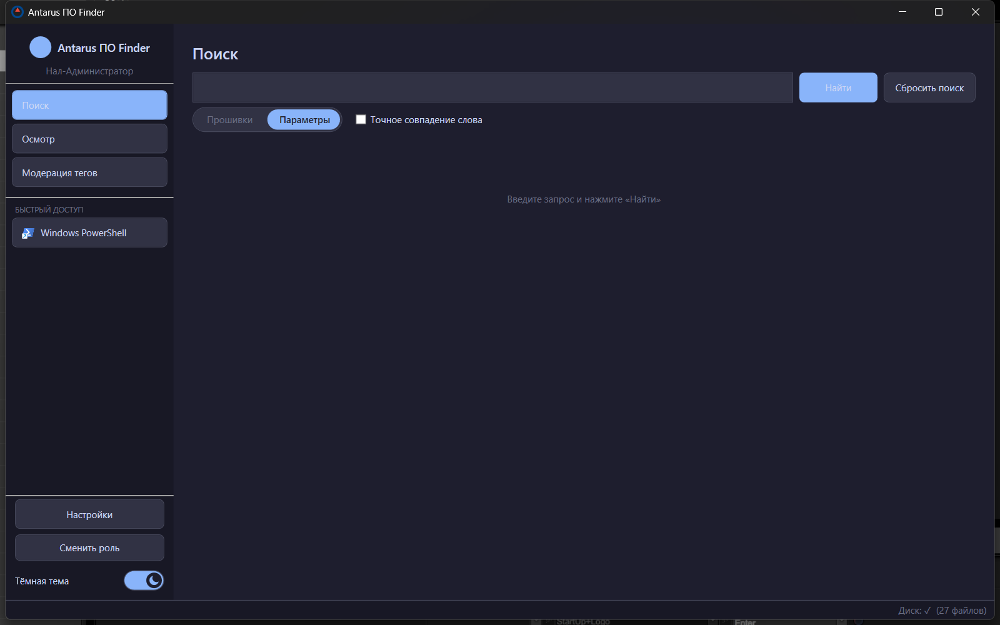
Рис. 3 — переключатель в режиме «Параметры».
Кнопка «Сбросить поиск» очищает запрос и результаты одним нажатием.
3. Осмотр — фото по QR, сканер, файлы
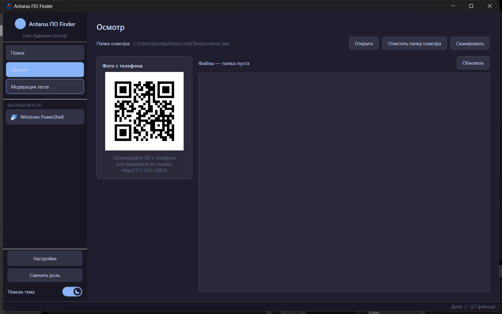
Рис. 4 — вкладка «Осмотр»: QR-код для приёма фото с телефона слева, список файлов папки осмотра справа.
1
Как только вкладка открыта, слева сразу виден QR-код — это ссылка на встроенный веб-сервер приложения.
Отсканируйте его телефоном (в одной Wi-Fi сети с компьютером) и загрузите фото — они появятся в списке
файлов автоматически, без обновления страницы.
2
Кнопка «Сканировать» открывает системный диалог сканирования Windows (WIA) прямо из приложения —
отдельного стороннего приложения запускать не нужно. Скан сохранится в папку осмотра как
scan_ГГГГММДД_ЧЧММСС.bmp.
3
«Открыть» — открывает папку осмотра в Проводнике. «Очистить папку осмотра» — удаляет все файлы
из неё безвозвратно (спросит подтверждение).
Если папка осмотра не задана — приложение подскажет открыть Настройки → Общие (администратору) или
сообщит, что нужно обратиться к администратору (наладчику без доступа к Настройкам).
При первом запуске QR-приёма фото Windows может показать системный запрос «Разрешить доступ к сети» —
это стандартное поведение для любой программы, принимающей подключения по Wi-Fi, разрешите доступ один раз.
4. Модерация тегов
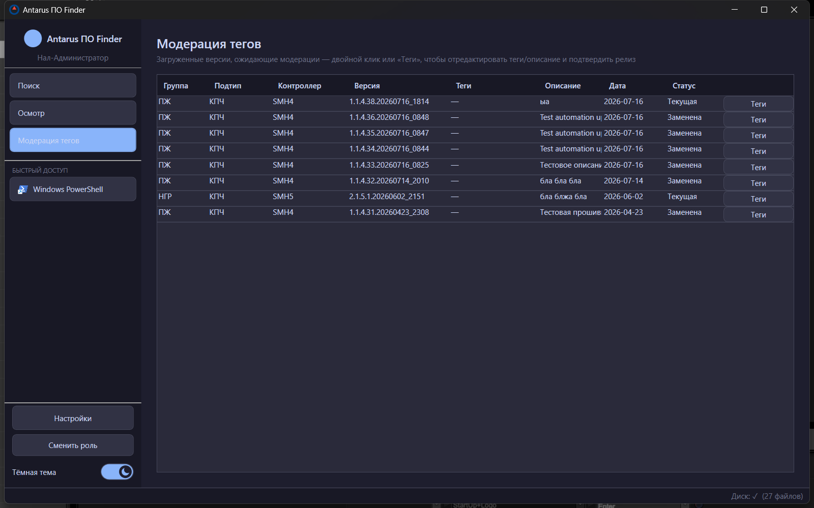
Рис. 5 — список загруженных версий без тегов, ожидающих модерации.
Здесь собраны недавно загруженные версии прошивок. Двойной клик по строке (или кнопка «Теги») открывает
редактор — можно поправить описание, тип пуска и добавить теги через бабл-редактор.
1
Отредактируйте теги/описание и сохраните.
2
Antarus спросит: «Вывести версию из модерации и сделать релизной?» — ответ «Да» снимает версию
со счётчика модерации, «Нет» просто сохраняет правки и оставляет её в списке.
5. Настройки → Общие
Раздел «Настройки» виден только ролям Нал-Администратор и Администратор.
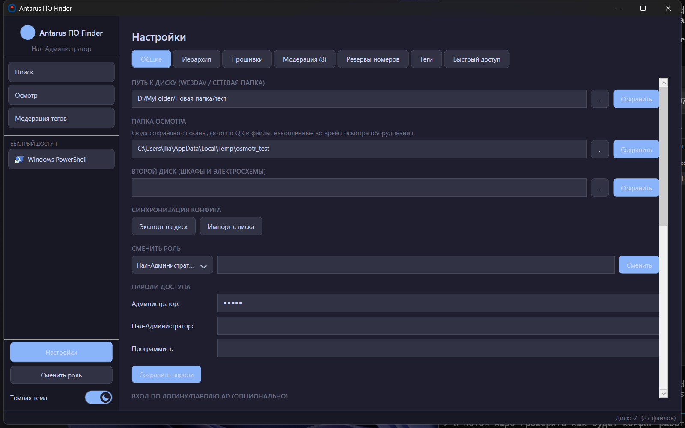
Рис. 6 — вкладка «Общие»: пути к диску и папке осмотра, синхронизация конфига, смена роли, пароли, вход по AD.
Поле
Назначение
Путь к диску (WebDAV / сетевая папка)
корневая папка с прошивками/параметрами — общая для всех компьютеров
Папка осмотра
куда попадают фото по QR и сканы (см. раздел 3)
Второй диск
шкафы и электросхемы — отдельный сетевой путь
Пароли доступа
отдельный пароль на роль Администратор/Нал-Администратор/Программист
Вход по логину и паролю AD
опционально: домен + группы для авто-определения роли по членству в AD-группе
Ниже — синхронизация конфига (кнопки «Экспорт на диск» / «Импорт с диска») и настройки автообновления
самого приложения — обе функции подробно описаны в разделе 9.
6. Настройки → Иерархия
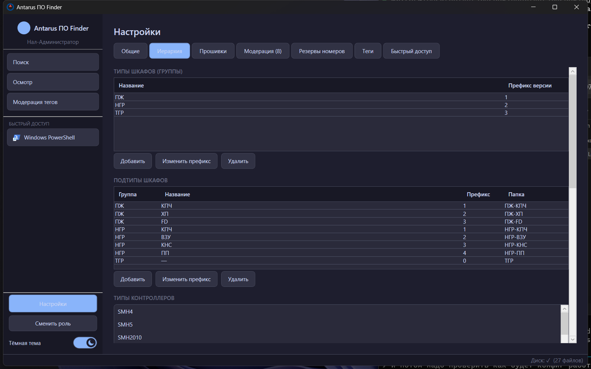
Рис. 7 — управление типами шкафов, подтипами и контроллерами (списки прокручиваются вниз:
ниже ещё модификации, производители, белый список расширений и кнопки пересоздания структуры диска).
Здесь администратор управляет всем справочником оборудования:
Типы шкафов (группы) — ПЖ, НГР, ТГР и их префиксы версии;
Подтипы шкафов — КПЧ, ХП, FD и т.д., привязаны к группе, у каждого своя папка на диске;
Типы контроллеров и их модификации (например PIXEL2 → PIXEL2-1020, PIXEL2-1021…);
Производители параметров (ПЧ/УПП);
Белый список расширений файлов прошивки (предупреждает, но не блокирует загрузку «неожиданного»
расширения);
Кнопки «Пересоздать структуру диска», «Синхронизировать прошивки с диска» и сканирование
неизвестных файлов.
Удаление группы/подтипа/контроллера с уже загруженными прошивками — необратимая операция в базе данных
(сами файлы на диске остаются). Перед удалением убедитесь, что это действительно нужно.
7. Настройки → Прошивки
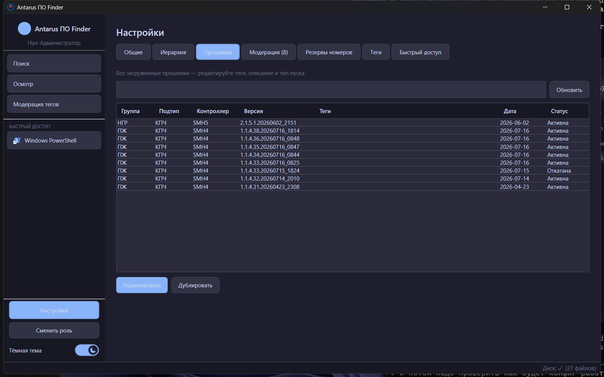
Рис. 8 — полный список загруженных версий с фильтром, статус «Активна»/«Заменена»/«Откатана».
Полный список всех загруженных версий с текстовым фильтром. Доступные действия: «Редактировать»
(описание/теги/тип пуска) и «Дублировать».
Кнопка отката версии здесь видна только роли Администратор — Нал-Администратор может редактировать
теги и описание, но не откатывать версии.
8. Настройки → Модерация / Резервы номеров / Теги / Быстрый доступ
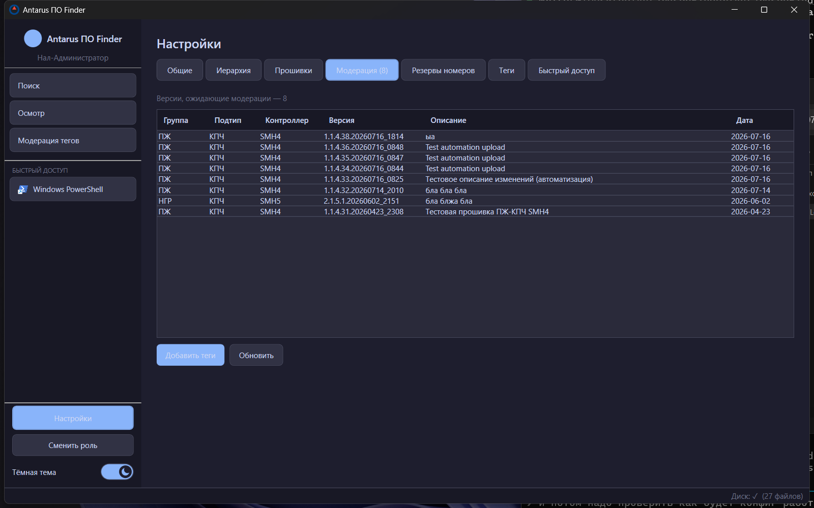
Рис. 9 — вкладка «Модерация» (счётчик в заголовке вкладки — «Модерация (N)»): дублирует
список из раздела 4, доступна прямо из Настроек.
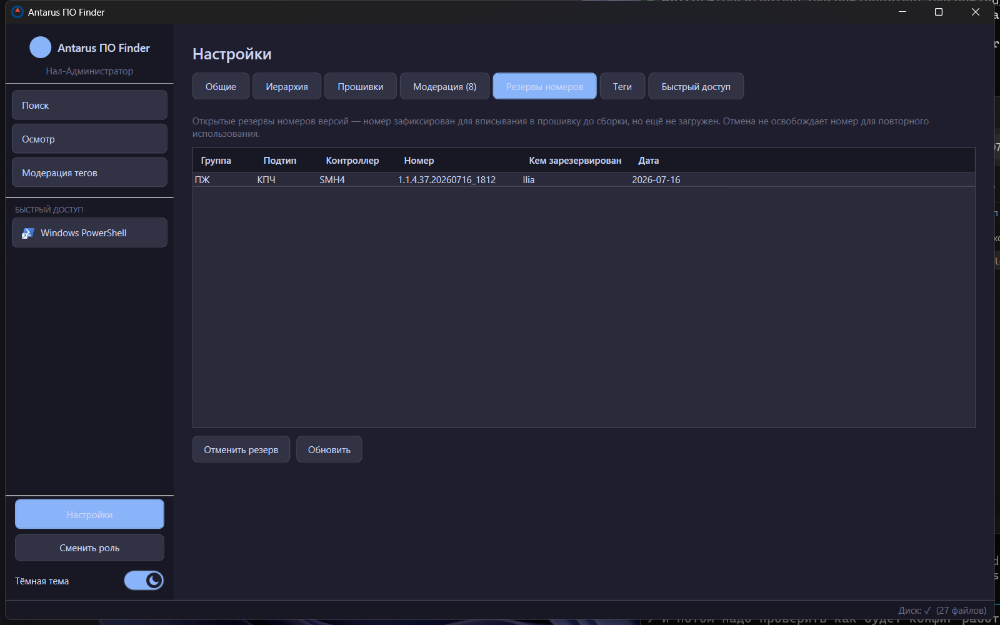
Рис. 10 — открытые резервы номеров версий (см. инструкцию для программиста, раздел 6).
Кнопка «Отменить резерв» — номер после отмены не переиспользуется повторно.
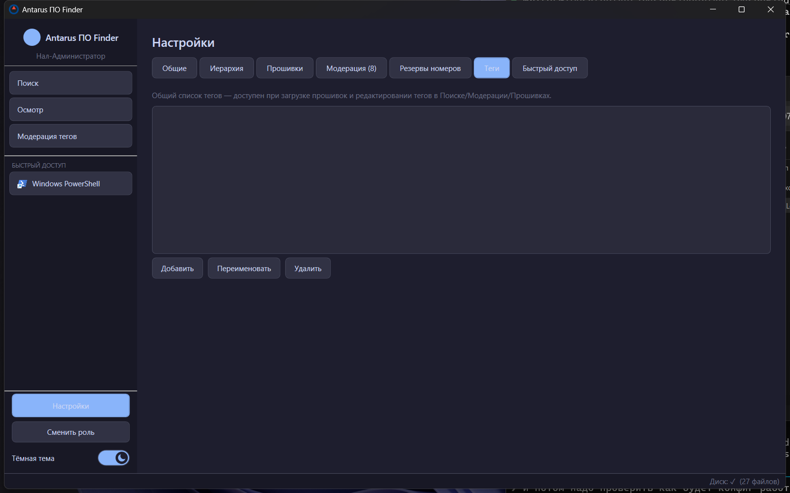
Рис. 11 — общий список тегов: добавить/переименовать/удалить. Переименование и удаление
применяются сразу ко всем прошивкам и файлам параметров, где этот тег использован.
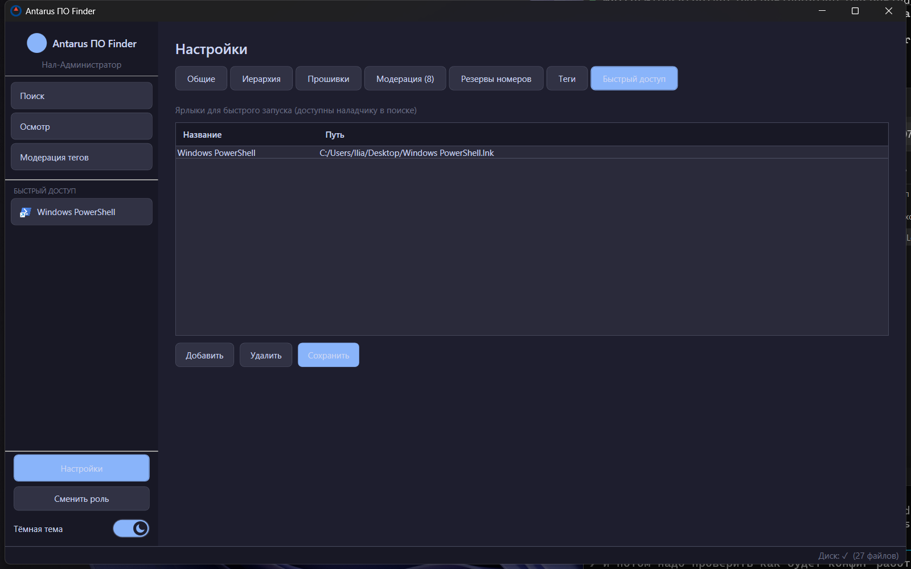
Рис. 12 — ярлыки быстрого запуска, видны наладчику в боковой панели под пунктами навигации.
9. Синхронизация конфига между компьютерами
Если у вас несколько компьютеров с Antarus ПО Finder (несколько наладчиков/администраторов), важно понимать,
что каждый компьютер хранит свою собственную базу данных локально — общий только сетевой диск с файлами
прошивок. Чтобы перенести справочник оборудования, теги, резервы и т.п. с одного компьютера на другой,
используется экспорт/импорт конфига.
Как это работает
1
На компьютере-источнике: Настройки → Общие → «Экспорт на диск». Файл
Конфиг/po_finder_config.json записывается в общую сетевую папку — ту же, где лежат прошивки.
2
На принимающем компьютере: Настройки → Общие → «Импорт с диска» — читает тот же файл. После импорта
показывается сводка: сколько записей добавлено (+), обновлено (~) и удалено (-) по каждой категории.
Что переносится, а что — нет
Переносится
Не переносится (остаётся своим на каждом компьютере)
Группы/подтипы/контроллеры/модификации (переименования и правки — тоже, не только новые записи)
Пароли ролей
Производители параметров, белый список расширений, общий список тегов
Путь к диску (root), папка осмотра
Резервы номеров версий
—
Прошивки и файлы параметров — только добавлением, никогда не удаляются при импорте
—
Тема, роль по умолчанию, быстрый доступ, домен AD, путь ко второму диску, настройки автообновления
—
Важно: «Быстрый доступ» и активная роль на момент экспорта тоже переносятся при импорте — если на
компьютере-источнике были свои ярлыки быстрого запуска (пути на его диске), они заменят локальные ярлыки
на принимающем компьютере. Проверьте вкладку «Быстрый доступ» после импорта.
Уведомление об обновлении конфига
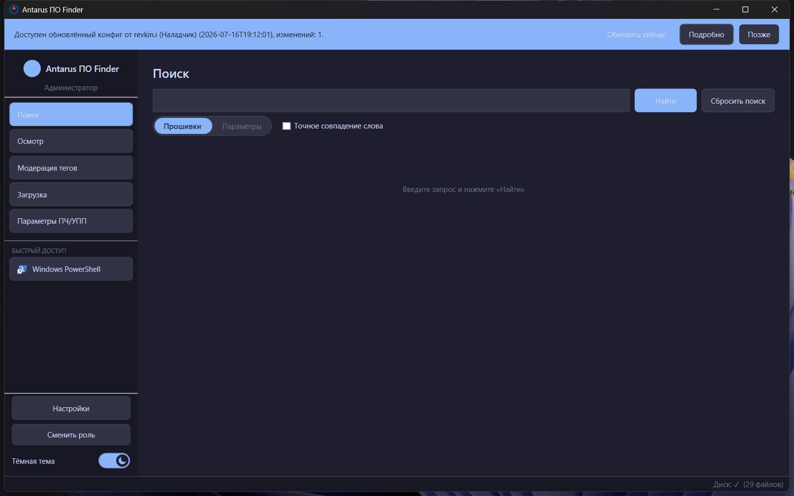
Рис. 13 — при запуске приложение само проверяет, не появился ли на диске более свежий экспорт
конфига, и показывает баннер: кто его сделал и когда.
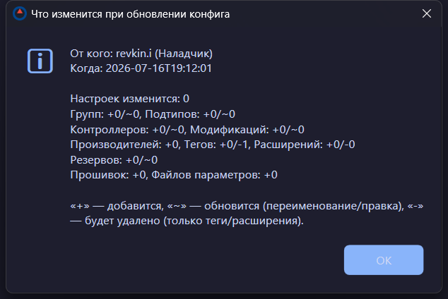
Рис. 14 — кнопка «Подробно» показывает точный список изменений по категориям до того,
как вы нажмёте «Обновить сейчас».
Кнопки баннера: «Обновить сейчас» — применяет импорт немедленно; «Подробно» — показывает
разбивку изменений без применения; «Позже» — скрывает баннер до следующего запуска приложения
(сам конфиг не изменится, баннер появится снова, если экспорт на общем диске обновится ещё раз).
Важное ограничение (для новых компьютеров). Переименования корректно переносятся только начиная
со второй синхронизации конкретного компьютера. При первой в жизни синхронизации Antarus сопоставляет
записи по названию — если название с тех пор уже успели переименовать на другом компьютере, оно попадёт как
«новая запись», а не «обновление» старой. Поэтому: сразу после установки на новый компьютер, ещё до того,
как кто-либо начал редактировать иерархию где-либо, сделайте один импорт конфига — это «знакомит» базы
данных друг с другом, и все последующие переименования/правки будут переноситься корректно.
10. Частые вопросы
Вопрос
Ответ
Наладчик не видит новую загруженную прошивку
Проверьте вкладку «Модерация тегов» — версия могла остаться без тегов, но должна быть видна и
через обычный Поиск сразу после загрузки.
После импорта конфига пропал/сменился ярлык быстрого доступа
Ожидаемое поведение — см. раздел 9. Настройте ярлыки заново во вкладке «Быстрый доступ».
После переименования подтипа на одном ПК на другом появился дубликат
Скорее всего это первая синхронизация этого ПК — см. предупреждение в конце раздела 9.
Как понять, кто и когда последний раз менял конфиг
Баннер обновления конфига (раздел 9) показывает имя пользователя Windows и время экспорта.
Не приходит фото по QR
Убедитесь, что телефон в той же Wi-Fi сети, и что заданный порт (Настройки → Общие) не закрыт
файрволом.